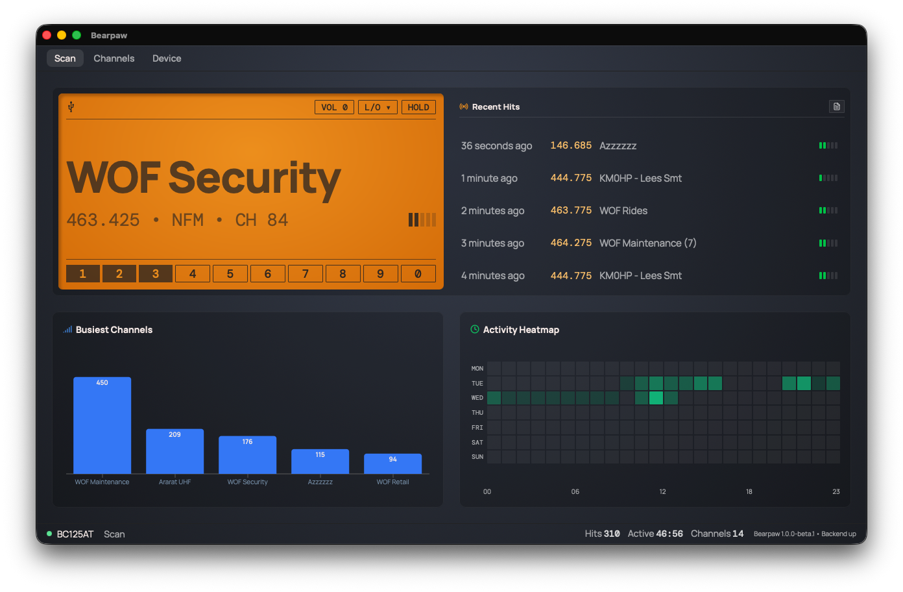
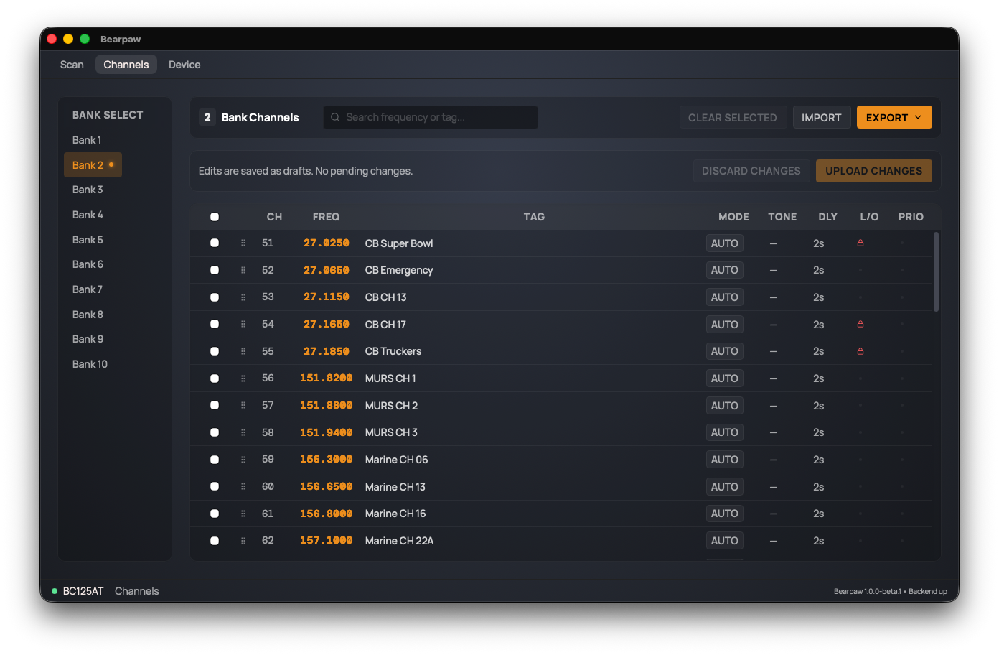

Every hit, on the record
As the scanner runs, Bearpaw writes down what it hears: frequency, time, how often. Watch a week go by and the busy channels surface on their own. Export the whole thing as CSV whenever you want it.
You listen. Bearpaw watches with you, keeping track of everything your BC125AT picks up and showing you the patterns as they build. It runs on the computer you already use, and the whole log is yours as CSV whenever you want it.


Uniden's Sentinel only runs on Windows. Bearpaw does the same job on Mac, Windows, and Linux: edit all 500 channels, banks, tones, and lockouts from a real keyboard, then upload the lot to the radio.
Import and export as CSV or native Uniden files, so whatever you already have comes straight across.
As the scanner runs, Bearpaw writes down what it hears: frequency, time, how often. Watch a week go by and the busy channels surface on their own. Export the whole thing as CSV whenever you want it.
Frequency, alpha tag, modulation, and signal strength, updated live while the scanner runs. No squinting at a two-line LCD.
Every channel, bank, tone, and lockout, edited from a real keyboard instead of the radio's keypad.
Move channel lists in and out of the radio as CSV or native Uniden files, no cloud account in the middle.
Talks to the scanner the same way Uniden's Sentinel software does, over the USB cable, verified against real wire captures.
One app, running live while you listen, on whatever machine sits next to the radio.
Fetching the latest release…
This is a beta. It's been tested against real hardware, but you may hit rough edges. Found one? Open an issue.
Beta builds aren't code-signed yet, so your computer flags them the first time you open the app:
xattr -cr /Applications/Bearpaw.app once in
Terminal.
chmod +x the AppImage and
run it, or install the .deb.